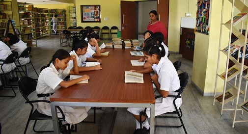
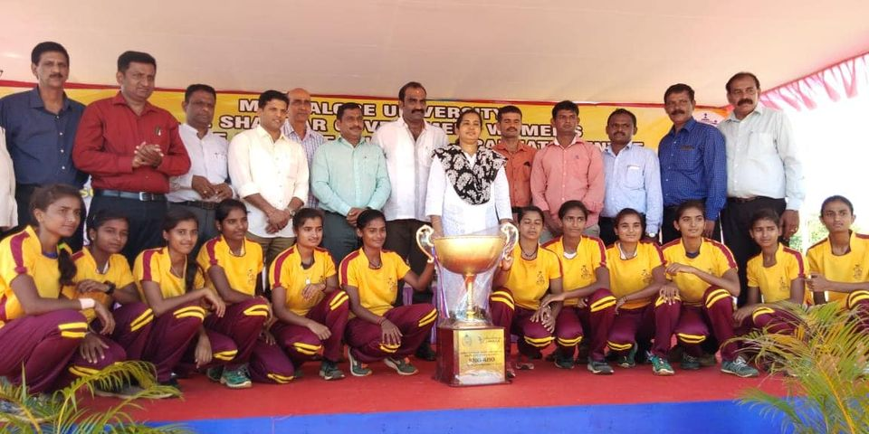

Upskilling the youth for enhancing their employability skills which will build a successful career. Sanchalana fouces on developing the employability skills in youths. Particularly, their Communication skills, Technical skills and Interview skills. The main objective of Sanchalana is to enhance and improve the employability skills in youths. The main goal is to create opportunities, and scope for the developement of the talents of the youth.
"Donating books promotes literacy in youths by creating more learning opportunities. By donating books to our library, you can play a part in bringing the joy of reading to the students who might otherwise have no access to books.Education is the key to development and growth and not everyone is lucky to afford quality education cause of financial hindrance.”
Sports play a major role in physical and mental health. But there is a huge gap between urban and rural areas in terms of sport facilities they receive. Sanchalana aims to fill the gaps by organising events like “South Indian Level Inter University KHO KHO for Women ” with joint association of Mangalore university to encourage women to participate in sports actively. Sports is for everyone not just for the talented. The positive impact this sport has is, the joy while participating in sports, the ability to inculcate sporting values and softskills by the youths in their daily lives will help the growth of confidence in their life. This is why Sanchalana believes that youth should be taught to play.